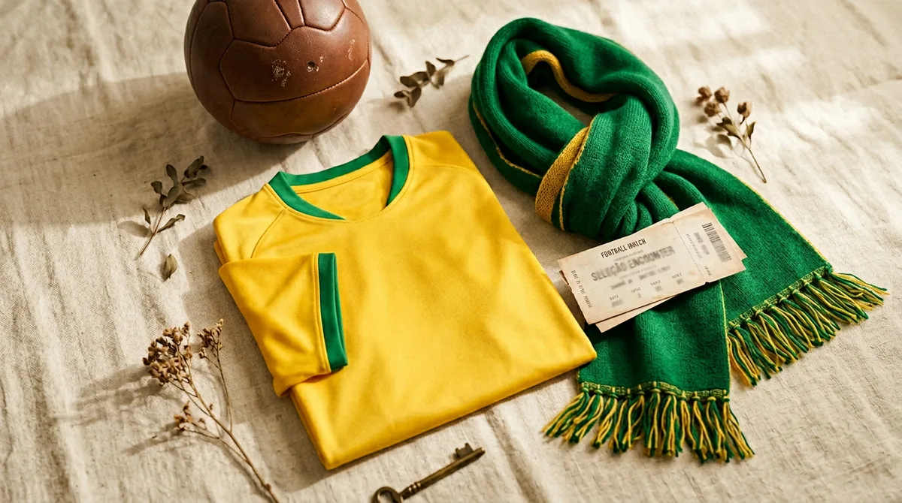
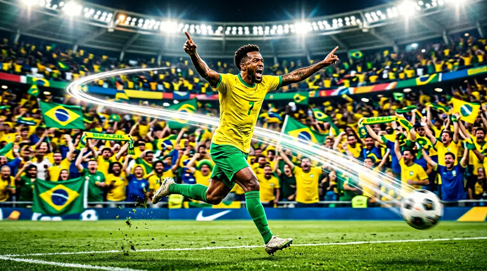
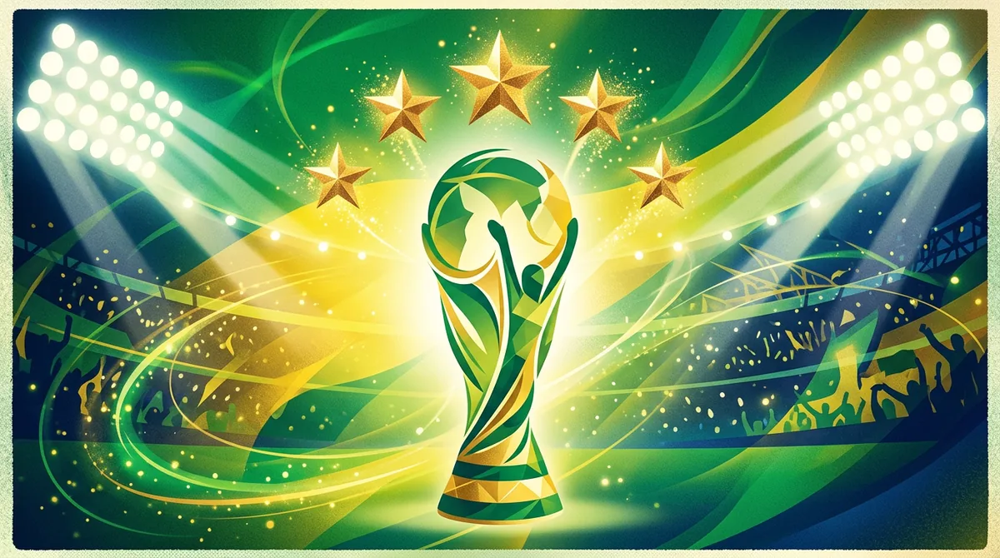
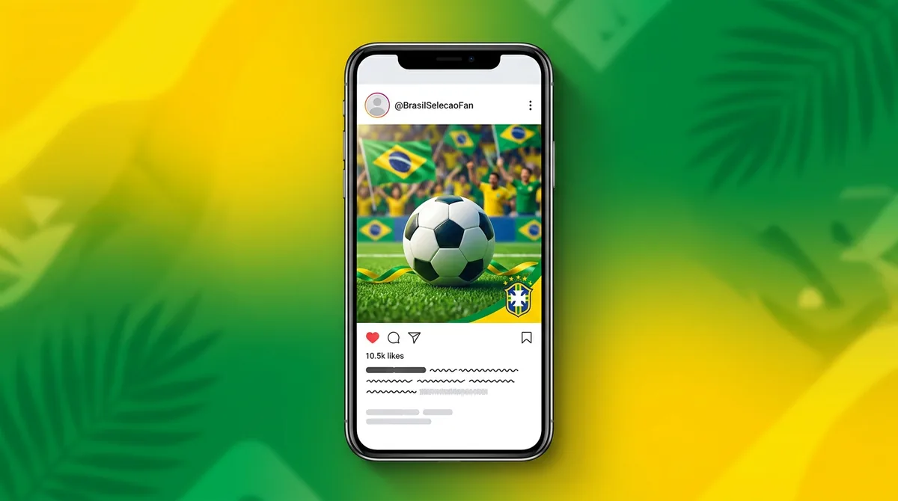

🇧🇷 EVERGREEN BRAZIL CAPTION HUB · SELEÇÃO · NEYMAR · VINI JR
200+ Brazil Football Captions for Instagram
If you're posting a Brazil jersey photo, matchday story, Neymar edit or World Cup reel, these Brazil football captions for Instagram are ready to copy and post. From short one-liners to funny fan captions, you'll find something for every Brazil football mood.
✍️ By Ansh Yadav·📅 June 21, 2026·⚽ 180+ Captions·🇧🇷 Brazil / Seleção
Brazil football captions for Instagram — yellow shirt, five stars, Joga Bonito energy.
How to Use These Brazil Football Captions
Use these ideas as starting points, then customize one detail before posting: your niche, mood, audience, player/team, photo context, scoreline, name style, or call-to-action. This makes the final post feel more original and useful.
Before vs After: Make It More Specific
A generic line becomes stronger when it includes context, emotion and a clear use case.
Generic
Better
Why It Works
Brazil match
Seleção night, yellow shirt, full Joga Bonito mood. 🇧🇷
Team identity + visual emotion
Neymar edit
Neymar feet, Brazil rhythm, timeline awake.
Player-specific hook
Win post
Three points, samba energy, Brazil pride.
Victory + cultural tone
Generic caption
Joga Bonito is not a style. It is Brazil.
Turns generic into identity
Brazil fans post in a lot of different moods — jersey selfies, watch-party stories, Neymar edits, Vini clips, World Cup carousels and loud group-chat reactions. This guide brings all of those moods together so you can find a caption fast and post without overthinking it.
→ Copy it. Post it. Let the football do the rest.
⚡ Quick Answer
The best Brazil football captions right now are short, clear and easy to copy:
📤 Useful page? Share it with your Brazil football crew
Brazil Caption Guide
Why This Brazil Football Caption Page Is Evergreen
Brazil content does not belong to one fixture. Fans need a brazil football caption, a brazil team caption, a caption for brazil football team, a brazil fan caption or a brazil supporter caption all year — for jersey photos, watch parties, Reels, edits, throwbacks and tournament posts.
Match-specific pages like Brazil vs Morocco serve one game. This guide is broader. It is built around the full Brazil identity: the yellow shirt, the five stars, Seleção pride, Canarinho nostalgia, Neymar flair, Vinicius Jr acceleration and the Joga Bonito style that made Brazil football globally iconic.

Seleção yellow jersey mood — one of the strongest evergreen Brazil visual signals.
A strong Brazil caption guide needs more than a few short lines. It should cover the full fan mood — quick captions, funny captions, player-specific sections, fan emotion, World Cup pride, Reels hooks and hashtag ideas — so you do not need to keep jumping between different pages.
Brazil Identity
Why Brazil Is Called the Home of Football
Brazil football carries a different kind of weight because the country is tied to some of the most iconic names in the game: Pelé, Ronaldo Nazário, Ronaldinho, Cafu and generations of players who turned winning into style. That is why Brazil captions often sound more emotional than ordinary team captions — the shirt already comes with memory, expectation and football mythology.
The CBF, Brazil’s national football body, has overseen one of the richest histories in the sport, from Copa America campaigns to unforgettable FIFA World Cup runs. When fans write “Vai Brasil”, “Seleção” or “Joga Bonito”, they are not just posting a caption. They are tapping into a football culture the whole world recognizes.
Use these for Reels covers, jersey selfies, quick Stories, watch-party snaps and goal reaction edits. Short lines work best when the visual already screams Brazil.
Humor performs because football fans share chaos faster than clean highlights. These are best for memes, friend group screenshots, watch-party videos and Brazil reaction edits.
My plans? Cancelled. Brazil plays today.
Watching Brazil like my rent depends on it.
Therapy is expensive. Brazil matchday is free.
My heartbeat now has a kickoff time.
Brazil fans don’t sit. We suffer creatively.
I said ‘one highlight’ and watched 40 minutes.
If Brazil scores, the neighbors will know.
Explaining offside and Joga Bonito in one breath.
I came for football, stayed for emotional damage.
Brazil fan starter pack: jersey, snacks, stress.
One yellow shirt and zero peace of mind.
When Brazil attacks, my phone flies somewhere.
Today’s workout: jumping after every chance.
My screen time goes undefeated on Brazil days.
Brazil watch party = friendship test.
I trust Brazil and regret it beautifully.
Mood swings sponsored by the Seleção.
Me pretending I’m calm before kickoff. 😂
Every Brazil game adds three years to my life story.
Can’t talk right now. I’m arguing with the TV.
✈️ Want Custom Caption Tool?
Create custom Brazil captions, hashtag ideas and fan-page hooks with the free CaptionStudio tools.
A caption for brazil football team should feel like the national team, not like a travel post with a football emoji added at the end. These lines fit the full squad, lineup graphics, national-team edits and Brazil posts where the shirt, badge and history matter more than one individual player.
If you specifically need a brazil team caption or a caption for brazil football, keep the line team-led instead of player-led. Mention the shirt, the badge, the five stars, Seleção pride or Joga Bonito — those details make the caption feel like Brazil instead of generic football copy.
The Brazil football team is not just a team — it is a football language.
Seleção on the pitch, history in the air.
The yellow jersey does not ask for attention. It owns it.
Every Brazil match feels like a festival.
When Brazil attacks, timelines stop scrolling.
For the badge, for the fans, for the sixth star.
Yellow jersey on, stress level max.
Some teams chase style. Brazil invented it.
Every Brazil match feels like an event.
The Seleção plays with history behind every pass.
Brazil fans do not hope quietly. We believe loudly.
The badge carries five stars and impossible standards.
Brazil football team captions should sound proud, not generic.
The world reads yellow before the whistle even blows.
The shirt is bright because the pressure is bigger.
Brazil’s identity is flair under pressure.
No ordinary football, only Brazil football.
The team changes. The aura stays.
Brazil football team = legacy, rhythm, expectation.
05 · Match Day
Brazil Matchday Captions
Matchday captions are different from evergreen fan captions. They need countdown tension, anthem emotion and “drop this now” energy. Use them just before kickoff, when lineups are out, or in the first Story frame of a game-day post.
Match day. Yellow shirt day.
Kickoff soon. Anxiety already started.
Brazil on the schedule, peace off the schedule.
From lineup drop to final whistle, all in.
Game day in Brazil colors feels different.
Jersey on. Notifications off. Brazil first.
Tonight’s mood depends on the scoreline.
My heart is in countdown mode.
Brazil matchday: loud TV, louder soul.
No plans after kickoff. Only football.
The playlist is samba, the dream is hexa.
One country, ninety minutes, infinite emotions.
Watch party ready. Voice gone already.
All roads lead to the yellow shirt today.
Brazil matchday captions need faith and noise.
Group stage or final, Brazil never feels casual.
From national anthem to final whistle — full emotion.
Some posts wait. Brazil posts go live now.
Brazil watch-party content needs captions with anticipation, noise and fan identity.
06 · Seleção
Seleção Captions & Meaning
Seleção means “the selected team” in Portuguese, and in football culture it is one of the strongest words you can use in a Brazil caption. It immediately feels more authentic than a generic “go Brazil” line. If you want a caption that football fans instantly recognize as team-specific, use Seleção.
Also remember the nickname fit: Canarinho works well for yellow-shirt photos, Verde-Amarela for color-led fan content, and Joga Bonito for skill edits. But for lineup posts and national-team emotion, Seleção is the cleanest word.
Seleção means the selected ones — and Brazil makes it look royal.
Vai Seleção, the yellow wave is here.
The chosen shirt. The chosen style. The chosen pressure.
Seleção Brasileira, football’s brightest color.
When people say Seleção, they mean Brazil with respect.
Green and yellow, selected for greatness.
The Seleção does not just play; it performs.
A Seleção caption needs pride, rhythm and one clean emoji.
The world knows the yellow shirt before the whistle.
Seleção forever, because style never expires.
This is not random hype. It is Seleção history.
Chosen by the badge, tested by the world.
Brazil’s best caption word? Seleção.
The selected team carries the biggest expectations.
Say Seleção and every fan sees yellow.
Brazil term
Meaning
Best use
Seleção
The selected national team
Lineups, matchday, full-squad posts
Canarinho
Little canary
Yellow jersey captions and fan identity
Verde-Amarela
Green and yellow
Color-led posts and flag content
Pentacampeões
Five-time champions
World Cup legacy captions
Joga Bonito
Play beautifully
Skill edits, flair clips and aesthetic reels
07 · Flair & Skill
Neymar Captions for Brazil Edits
Neymar captions work best when your post is about flair, dribbling, risk, swagger and number-ten energy. They should sound fluid — not stiff. A Neymar edit deserves motion, not generic text.
Neymar-style Brazil captions should feel smooth, theatrical and skill-heavy.
Neymar flair, Brazil feeling.
Dribble first, explain later.
Neymar made skill look like a language.
Brazilian magic with number ten energy.
When Neymar smiles, defenders panic.
Flair is not extra in Brazil. It is tradition.
Neymar edits deserve captions with movement.
A little chaos, a little magic, full Brazil.
Samba feet, superstar pressure.
Neymar nation never scrolls past yellow.
The ball sticks to Neymar like it knows the script.
Brazil’s number ten carries theatre in his boots.
Too much flair for ordinary captions.
If it looks impossible, Neymar might try it.
Art, audacity, ankle-breakers.
Neymar captions should sound smooth, not stiff.
Brazil style always has a Neymar chapter.
He turns moments into edits and edits into myth.
08 · Pace & Future
Vinicius Jr Brazil Captions
Vinicius Jr is not a nostalgia caption. He is pace, directness, modern Brazil and next-era confidence. These lines fit winger edits, sprint clips, transition reels and future-of-Brazil posts.

Vinicius Jr posts need speed-based captions, not old-school generic football quotes.
Vini speed, Brazil heat.
Vinicius Jr brings electricity to the yellow shirt.
Fast feet, fearless heart, Brazil future.
Vini on the wing, timeline on fire.
Brazil’s next era runs at full speed.
Real Madrid rhythm, Seleção soul.
Vini captions need pace, confidence and spark.
When Vini accelerates, the stadium leans forward.
Brazil future looks fast and fearless.
Yellow shirt, winger energy, big-stage smile.
One touch to spin the defender, one burst to kill the line.
Vini Jr is the sprint version of Brazil confidence.
Modern Brazil, classic swagger.
He plays like pressure is an invitation.
The future of Brazil football is already loud.
From winger chaos to end product, Vini brings both.
09 · Joga Bonito
Joga Bonito Captions
Joga Bonito means “play beautifully,” but in Brazil football culture it also means style with courage. These captions work when your visual is more about the way Brazil plays than the result itself.
Joga Bonito captions fit highlights built around touch, rhythm, flair and movement.
Joga bonito is not a slogan. It is a warning.
Play beautifully, win loudly.
Brazil made football look artistic on purpose.
Joga bonito means style with substance.
The pass, the spin, the rhythm — that is the point.
Brazil does not remove flair to be safe.
Beautiful football still belongs in winning teams.
The world calls it skill. Brazil calls it normal.
Every Joga Bonito caption should sound fluid.
When Brazil flows, football becomes choreography.
Style is not decoration here. It is identity.
Joga bonito lives between touch and timing.
The ball moves with more imagination in yellow.
Brazil football is proof that beauty can be ruthless.
Play free. Play brave. Play Brazil.
10 · Hexa Dream
Brazil World Cup Captions
Brazil World Cup posts carry more weight than ordinary football content because the badge already carries five stars. That makes every tournament caption about legacy, pressure and the dream of Hexa — the sixth title. Use these for tournament graphics, fan edits, nostalgia posts and matchday carousels.

Brazil World Cup content should feel historical, not random — five stars are the core signal.
Brazil at a World Cup is appointment viewing.
Five stars are history. The sixth is the dream.
World Cup nights look brighter in Brazil yellow.
From Pelé to today, the legacy never left.
Hexa is not a word. It is a national mood.
Brazil does not enter tournaments quietly.
Every World Cup needs Brazil energy.
The trophy knows the way to Brazil.
Group stage today, legacy tomorrow.
For Pelé, for the fans, for the sixth star.
Brazil carries memory into every World Cup kickoff.
Five stars behind us, one dream ahead.
The yellow shirt always enters with world-title pressure.
World Cup captions for Brazil should feel historic.
Some nations chase moments. Brazil chases crowns.
The sixth star lives in every fan conversation.
Legacy is heavy. Brazil wears it anyway.
World Cup football looks natural in Brazil colors.
A good brazil fan caption should sound like support, nerves and national identity. Fan captions work best when the post is about you + the team, not just one footballer.
If you want a brazil supporter caption, lean into emotion more than analysis. Supporter-style lines fit watch parties, flag photos, jersey selfies, national-anthem clips and loud crowd visuals because the feeling of belonging matters as much as the scoreline.
Brazil fans turn matchday into a festival.
If Brazil plays, my plans are cancelled.
Yellow jersey on, volume up.
Brazil fan forever, win or heartbreak.
No neutral mode when Brazil plays.
My heart speaks Portuguese on matchday.
From India to Brazil, football is the bridge.
Brazil fans do not watch; they feel every touch.
A Brazil watch party is half football, half carnival.
The louder the samba, the closer the goal feels.
One badge, one anthem, one loud room.
Being a Brazil fan means beauty and blood pressure.
Every match becomes personal in yellow.
Brazil supporter captions should sound emotional, not generic.
You don’t support Brazil quietly.
12 · Soft & Visual
Aesthetic Brazil Captions
Not every post needs loud energy. Some Brazil visuals are about floodlights, crowd color, jersey texture, slow-motion edits and nostalgia. These softer lines fit those moments better than high-volume fan captions.
Yellow under floodlights.
Football, but make it Brazil.
A flag, a song, a feeling.
Stadium lights, racing hearts.
When the crowd sings, the night changes.
The beautiful game has a Brazilian accent.
Golden shirt, soft chaos.
A little nostalgia, a lot of yellow.
Brazil looks even better in slow motion.
Poetry in boots.
Samba under stadium lights.
Not every caption needs to shout.
Brazil, framed in green and gold.
Some football photos deserve softer lines.
This is what football romance looks like.
13 · WhatsApp
Brazil WhatsApp Status Captions
These are short enough for WhatsApp status, Instagram Stories, one-line notes and fast fan-page stickers. Use them when the visual already explains the mood.

Status captions should be tiny, sharp and instantly readable on mobile.
Vai Brasil 🇧🇷
Seleção forever.
Yellow jersey day.
Brazil matchday mood.
Joga bonito vibes.
Hexa dreams.
Brazil till full-time.
Canarinho energy.
Samba football.
Football is yellow today.
Brazil watch party.
Green, yellow, belief.
Brazil > everything tonight.
One team. One heart.
Yellow with purpose.
14 · Reels & Hashtags
Brazil Football Hashtags & Reels Strategy
Brazil content performs best when the caption, first frame and hashtags all point in the same direction. If the clip is a Neymar dribble edit, the text should say Neymar or flair. If the clip is a lineup post, say Brazil or Seleção. If it is a fan watch-party reel, use fan language. Do not stuff thirty unrelated tags. A tighter set usually wins.
Reels hooks for Brazil edits
POV: Brazil just scored and your room exploded.
This yellow shirt never enters quietly.
Why Brazil edits always hit harder.
The reason Brazil captions feel different.
Five stars on the badge, pressure in every frame.
Brazil fan pages — save this caption bank.
Watch till the end if you love Joga Bonito.
That one Brazil clip you replay ten times.
If you support Brazil, this is your caption.
The cleanest Brazil matchday hook you can post today.
Brazil caption FAQ — useful for fans, creators and football pages.
The best Brazil football captions are short, team-specific and full of yellow-green identity. Use words like Brazil, Seleção, Joga Bonito, five stars, Neymar, Vini Jr and Vai Brasil.
Seleção means ‘the selection’ or ‘the selected team’ in Portuguese. In football, fans use it as a proud name for the Brazil national team.
Use ‘Vai Brasil. Always. 🇧🇷’ or ‘Yellow shirt, golden dreams.’ Both are short, emotional and easy to use on Reels or Stories.
Yes. Neymar captions work best when the post is about flair, dribbling, number 10 energy or a Neymar edit. For team lineups or wide fan posts, use Brazil or Seleção captions.
Brazil World Cup captions usually mention five stars, the dream of the sixth title, Joga Bonito, legacy, matchday pressure and the yellow shirt.
Use a tight set like #Brazil #BrazilFootball #Selecao #VaiBrasil #JogaBonito #WorldCup2026 #FootballReels and add player tags only when the post is player-specific.
No. You can use these Brazil captions for friendlies, qualifiers, Copa America, the World Cup, club edits and fan-page posts all year.
Joga Bonito is Portuguese for ‘play beautifully.’ In football culture, it is strongly connected with Brazil’s creative and stylish way of playing.
Canarinho means little canary and is a Brazil nickname connected to the yellow shirt. Fans use it as an affectionate Brazil football identity.
Yes. These Brazil football captions are free to copy and use on Instagram, Reels, Stories, WhatsApp and TikTok.
Hexa means the dream of a sixth FIFA World Cup title. Brazil already has five stars, so fans use “Hexa” to talk about winning the sixth.
“Vai Brasil” means “Go Brazil.” It is the simplest and most common chant-style line for captions, Stories and watch-party posts.
Common Brazil nicknames include Seleção, Canarinho, Verde-Amarela and Pentacampeões. Each one highlights a different part of Brazil’s football identity.
Seleção comes from Portuguese and means “the selected team.” In football, it became a natural shorthand for Brazil’s national side.
Editorial note: This page is written and edited by CaptionStudio for Brazil football fans, Seleção supporters, Neymar/Vini Jr edit pages and Instagram creators. Use the examples as starting points, then customize them for your post, audience and platform before publishing. Reviewed by CaptionStudio Editorial Desk · Last updated June 21, 2026.
👤
Written by Ansh Yadav
Football caption researcher and founder of CaptionStudio. Has published 5,000+ social media captions across football, Instagram and creator niches, with a focus on copy that sounds natural, specific and easy to post.
📤 Found this useful? Share it before the next Brazil match
Disclaimer: This is an independent fan/creator resource. CaptionStudio is not affiliated with, endorsed by, or sponsored by FIFA, Sony Pictures, Marvel, Disney, Instagram, Meta, or any player/team. All trademarks belong to their respective owners. Captions on this page are original caption-style lines written for creator use and are not official dialogues or copyrighted transcripts.